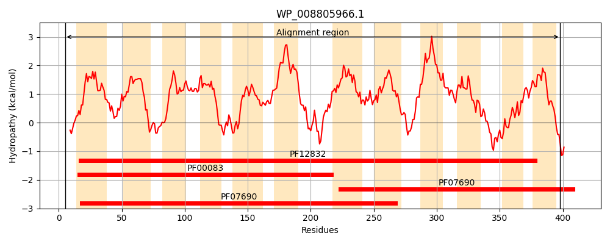
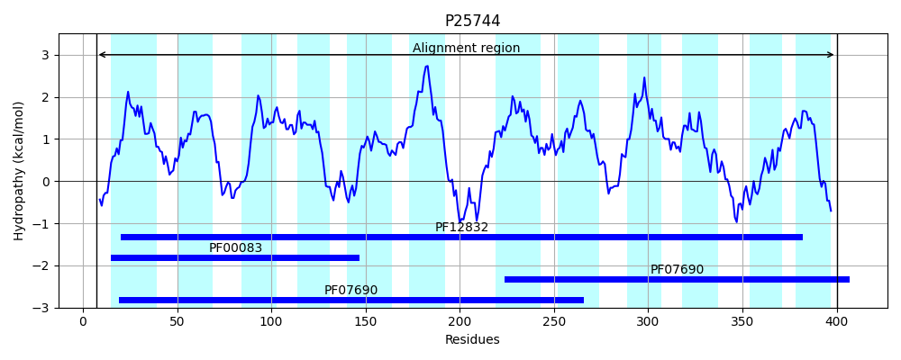
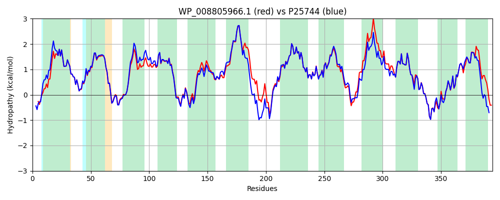

Hit Accession: P25744
Hit TCID: 2.A.1.2.20
Hit Description: gnl|BL_ORD_ID|9565 gnl|TC-DB|P25744|2.A.1.2.20 Hypothetical transport protein yceE - Escherichia coli.
Mach Len: 394
e:0.000000
Query TMS Count : 12
Hit TMS Count: 12
TMS-Overlap Score: 12.450000
Predicted Substrates:CHEBI:42503;fosfomycin, CHEBI:87211;fluoroquinolone antibiotic
BLAST Alignment:
Score: 1758 , Bit scores: 681 bits, E-value: 0.0e+00, Alignment length: 394, Percentage identity: 87
Query: 5 DTPINWKQNLTVTWLGCFLTGAAFSLVMPFLPLYVEQLGVTGHSALNMWSGLVFSITFLFSAIASPFWGGLADRKGRKIMLLRSALGMSVVMMLMGMAQNIWQFLLLRALLGLLGGFIPNANALIATQIPRHKSGWALGTLSTGAVSGALLGPLAGGFLADHWGLRTVFFMTAAVLFICFLFTLFLIRENFVPIAKKEMLSAREVFSSLQNPKLVLSLFVTSLIIQVATGSIAPILTLYVRDLAGNVSNIAFISGMIASVPGIAALMSAPRLGRLGDRIGPEKILIVALIISVLLLIPMSFVQTPLQLGILRFLLGAADGALLPAVQTLLVYNSTSQISGRIFSYNQSFRDIGNVTGPLIGASVSANYGFRAVFLVTAGVVLFNAIYSTLSLRR 398
DTPINWK+NL V WLGCFLTGAAFSLVMPFLPLYVEQLGVTGHSALNMWSG+VFSITFLFSAIASPFWGGLADRKGRK+MLLRSALGM +VM+LMG+AQNIWQFL+LRALLGLLGGF+PNANALIATQ+PR+KSGWALGTLSTG VSGALLGP+AGG LAD +GLR VFF+TA+VL +CF TLF IRE F P++KKEML REV +SL+NPKLVLSLFVT+LIIQVATGSIAPILTLYVR+LAGNVSN+AFISGMIASVPG+AAL+SAPRLG+LGDRIGPEKILI ALI SVLLLIPMS+VQTPLQLGILRFLLGAADGALLPAVQTLLVYNS++QI+GRIFSYNQSFRDIGNVTGPL+GA++SANYGFRAVFLVTAGVVLFNA+YS SLRR
Sbjct: 7 DTPINWKRNLIVAWLGCFLTGAAFSLVMPFLPLYVEQLGVTGHSALNMWSGIVFSITFLFSAIASPFWGGLADRKGRKLMLLRSALGMGIVMVLMGLAQNIWQFLILRALLGLLGGFVPNANALIATQVPRNKSGWALGTLSTGGVSGALLGPMAGGLLADSYGLRPVFFITASVLILCFFVTLFCIREKFQPVSKKEMLHMREVVTSLKNPKLVLSLFVTTLIIQVATGSIAPILTLYVRELAGNVSNVAFISGMIASVPGVAALLSAPRLGKLGDRIGPEKILITALIFSVLLLIPMSYVQTPLQLGILRFLLGAADGALLPAVQTLLVYNSSNQIAGRIFSYNQSFRDIGNVTGPLMGAAISANYGFRAVFLVTAGVVLFNAVYSWNSLRR 400 | Protein Hydropathy Plots: |
|---|
|  |  |
Pairwise Alignment-Hydropathy Plot:
|
|---|
|  |